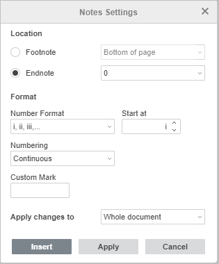

Umetanje završnih fusnota
U Document Editoru možete umetnuti završne fusnote kako biste dodali objašnjenja ili komentare za određene pojmove ili rečenice, naveli izvore itd., koje se prikazuju na kraju dokumenta.
Umetanje završnih fusnota
Da biste umetnuli završnu fusnotu u dokument,
- postavite kursor na kraj pasusa ili reči na koju želite da dodate završnu fusnotu,
- prebacite se na karticu Reference na gornjoj alatnoj traci,
-
kliknite na ikonu Fusnota na gornjoj alatnoj traci i izaberite opciju Umetni završnu fusnotu iz menija.
Oznaka završne fusnote (tj. indeksni znak koji označava fusnotu) pojavljuje se u tekstu dokumenta, a kursor se premešta na kraj dokumenta.
- upišite tekst završne fusnote.
Ponovite gore navedene korake da biste dodali sledeće završne fusnote za druge delove teksta u dokumentu. Fusnote se numerišu automatski: podrazumevano i, ii, iii itd.
Prikaz završnih fusnota u dokumentu
Ako zadržite pokazivač miša iznad oznake završne fusnote u tekstu dokumenta, pojavljuje se mali iskačući prozor sa tekstom fusnote.
Kretanje kroz završne fusnote
Da biste se lako kretali kroz dodate završne fusnote u tekstu dokumenta,
- kliknite na strelicu pored ikone Fusnota na kartici Reference na gornjoj alatnoj traci,
- u odeljku Idi na završne fusnote koristite strelicu da biste otišli na prethodnu fusnotu ili strelicu da biste otišli na sledeću fusnotu.
Uređivanje završnih fusnota
Da biste uredili podešavanja završnih fusnota,
- kliknite na strelicu pored ikone Fusnota na kartici Reference na gornjoj alatnoj traci,
- izaberite opciju Podešavanja fusnota iz menija,
-
promenite trenutne parametre u prozoru Podešavanja fusnota koji će se pojaviti:

-
Podesite Lokaciju završnih fusnota na stranici izborom jedne od ponuđenih opcija iz padajućeg menija desno:
- Kraj odeljka – da se fusnote postave na kraj odeljaka.
- Kraj dokumenta – da se fusnote postave na kraj dokumenta (podrazumevano).
-
Podesite Format završnih fusnota:
- Format numeracije – izaberite željeni format numeracije iz ponuđenih: 1, 2, 3,..., a, b, c,..., A, B, C,..., i, ii, iii,..., I, II, III,....
- Počni od – koristite strelice da postavite broj ili slovo od kog želite da počne numerisanje.
-
Numeracija – izaberite način numerisanja fusnota:
- Kontinuirano – da se fusnote numerišu redom kroz ceo dokument,
- Ponovo u svakom odeljku – da numeracija fusnota počinje od 1 (ili drugog znaka) na početku svakog odeljka,
- Ponovo na svakoj stranici – da numeracija fusnota počinje od 1 (ili drugog znaka) na početku svake stranice.
- Prilagođena oznaka – postavite poseban znak ili reč koju želite koristiti kao oznaku fusnote (npr. * ili Napomena1). Unesite željeni znak/reč u polje i kliknite na dugme Umetni na dnu prozora Podešavanja fusnota.
-
Koristite padajuću listu Primeni promene na ako želite da primenite navedena podešavanja fusnota na Ceo dokument ili samo na Trenutni odeljak.
Napomena: da biste koristili različita podešavanja fusnota u posebnim delovima dokumenta, potrebno je da prvo umetnete prelome odeljaka.
-
Podesite Lokaciju završnih fusnota na stranici izborom jedne od ponuđenih opcija iz padajućeg menija desno:
- Kada završite, kliknite na dugme Primeni.
Brisanje završnih fusnota
Da biste obrisali jednu završnu fusnotu, postavite kursor odmah ispred oznake fusnote u tekstu i pritisnite Delete. Ostale fusnote će se automatski renumerisati.
Da biste obrisali sve završne fusnote u dokumentu,
- kliknite na strelicu pored ikone Fusnota na kartici Reference na gornjoj alatnoj traci,
- izaberite opciju Obriši sve fusnote iz menija,
- u prozoru koji se pojavi izaberite Obriši sve završne fusnote i kliknite na OK.